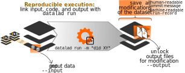

Research data management
üë©‚Äçüíªü뮂Äçüíª
with DataLad
Adina Wagner @AdinaKrik @AdinaKrik
|
Lennart Wittkuhn@lnnrtwttkhn
|
|
Psychoinformatics lab, Institute of Neuroscience and Medicine (INM-7) Research Center Jülich |
Max Planck UCL Centre, for Computational Psychiatry and Ageing Research MPI Berlin |
Slides: https://github.com/datalad-handbook/course/
welcome!
A few logistical things first:- An approximate schedule for today is on our companion workshop website (link is in the public notes). We'll try to stick to it
- Let us introduce the workshop organizers...
- Let us introduce the virtual workshop venue...
- Public and private chats
- Shared notes
- Break-out rooms
- Drop out and re-join as you please, make use of your status setting
Why are we here? ReproNim
- ReproNim is an initiative to improve the reproducibility and efficiency in neuroimaging
- It's goal is "to improve the reproducibility of neuroimaging science and extend the value of our national investment in neuroimaging research, while making the process easier and more efficient for investigators."
- ReproNim develops free training materials, supports tool development, and offers training activities. ReproNim fellows teach their peers in independent courses, workshops, or Hackathons about tools or methods that increase the reproducibility of their research.
What will we do today?
- The workshop centers around DataLad
- We aim to do more than a standard introduction by providing in-depth explanations, hands-on exercises, and discussions throughout the day
- (this will be much harder in this virtual setting - please bear with us)
Let's do the splits

Resources and Further Reading
|
Comprehensive user documentation in the DataLad Handbook (handbook.datalad.org) |
|
 |
|
 |
|
 |
|
Questions/interaction throughout the workshop
- If you have a question during a lecture, please first type your questions in the chat. There are no stupid questions :)
- It would be great to have lively discussions - unless its interrupting a speaker, please feel encouraged to unmute/turn on your video to interact with us.
- We're happy to discuss specific use cases at the end. Please make a note about them in the "Shared notes" of BigBlueButton
- Reach out to us via Matrix or GitHub at any later point after the workshop.
- We are recording the lectures and will make them available online
Live polling system
Live coding + hands-on
- Live-demonstration of DataLad examples and workflows
- Code along with copy-paste code snippets and hands-on exercises: TODO handbook.datalad.org/r.html?FZJmlcode
- Requirements:
- Most recent DataLad version for your OS (installation instructions at handbook.datalad.org)
- For containerized analyses: DataLad extension datalad-containers (available via pip) + Singularity
- A command-line tool, available for all major operating systems (Linux, macOS/OSX, Windows), MIT-licensed
- Build on top of Git and Git-annex
- Allows...
- ... version-controlling arbitrarily large content
- version control data and software alongside to code!
- ... transport mechanisms for sharing and obtaining data
- consume and collaborate on data (analyses) like software
- ... (computationally) reproducible data analysis
- Track and share provenance of all digital objects
- ... and much more
- Completely domain-agnostic
Acknowledgements
|
Funders


Collaborators
|
Core concepts & features
Everything happens in DataLad datasets

Dataset = Git/git-annex repository
- content agnostic
- no custom data structures
- complete decentralization
- Looks and feels like a directory on your computer:

 File viewer and terminal view of a DataLad dataset
File viewer and terminal view of a DataLad dataset
version control arbitrarily large files

- Non-complex DataLad core API (easy for data management novices)
- Pure Git or git-annex commands (for regular Git or git-annex users, or to use specific functionality)
Stay flexible:
Use a datasets' history

- reset your dataset (or subset of it) to a previous state,
- revert changes or bring them back,
- find out what was done when, how, why, and by whom
- Identify precise versions: Use data in the most recent version, or the one from 2018, or...
Consume and collaborate

machine-readable, re-executable provenance

Seamless nesting and dataset linkage

Third party integrations

Apart from local computing infrastructure (from private laptops to computational clusters), datasets can be hosted in major third party repository hosting and cloud storage services. More info: Chapter on Third party infrastructure.
Examples of what DataLad can be used for:
- Publish or consume datasets via GitHub, GitLab, OSF, or similar services

Examples of what DataLad can be used for:
- Behind-the-scenes infrastructure component for data transport and versioning (e.g., used by OpenNeuro, brainlife.io , the Canadian Open Neuroscience Platform (CONP), CBRAIN)

Examples of what DataLad can be used for:
- Creating and sharing reproducible, open science: Sharing data, software, code, and provenance

Examples of what DataLad can be used for:
- Central data management and archival system

Live demo Basics
Code to follow along: handbook.datalad.org/r.html?FZJmlcodeDataLad Datasets
- DataLad's core data structure
- Dataset = A directory managed by DataLad
- Any directory of your computer can be managed by DataLad.
- Datasets can be created (from scratch) or installed
- Datasets can be nested: linked subdirectories
Questions!
Why version control?

- keep things organized
- keep track of changes
- revert changes or go back to previous states
Version Control
- DataLad knows two things: Datasets and files
Local version control
Procedurally, version control is easy with DataLad!

Advice:
- Save meaningful units of change
- Attach helpful commit messages
Summary - Local version control
datalad createcreates an empty dataset.- Configurations (-c yoda, -c text2git) are useful (details soon).
- A dataset has a history to track files and their modifications.
- Explore it with Git (git log) or external tools (e.g., tig).
datalad saverecords the dataset or file state to the history.- Concise commit messages should summarize the change for future you and others.
datalad download-urlobtains web content and records its origin.- It even takes care of saving the change.
datalad statusreports the current state of the dataset.- A clean dataset status (no modifications, not untracked files) is good practice.
Questions!
Consuming datasets
- Here's how a dataset looks after installation:
- Datasets are light-weight: Upon installation, only small files and meta data about file availability are retrieved.

Plenty of data, but little disk-usage
- Cloned datasets are lean. "Meta data" (file names, availability) are present, but no file content:
$ datalad clone git@github.com:psychoinformatics-de/studyforrest-data-phase2.git
install(ok): /tmp/studyforrest-data-phase2 (dataset)
$ cd studyforrest-data-phase2 && du -sh
18M .$ datalad get sub-01/ses-movie/func/sub-01_ses-movie_task-movie_run-1_bold.nii.gz
get(ok): /tmp/studyforrest-data-phase2/sub-01/ses-movie/func/sub-01_ses-movie_task-movie_run-1_bold.nii.gz (file) [from mddatasrc...]# eNKI dataset (1.5TB, 34k files):
$ du -sh
1.5G .
# HCP dataset (80TB, 15 million files)
$ du -sh
48G .
Git versus Git-annex
- Data in datasets is either stored in Git or git-annex
- By default, everything is annexed, i.e., stored in a dataset annex by git-annex
| Git | git-annex |
| handles small files well (text, code) | handles all types and sizes of files well |
| file contents are in the Git history and will be shared upon git/datalad push | file contents are in the annex. Not necessarily shared |
| Shared with every dataset clone | Can be kept private on a per-file level when sharing the dataset |
| Useful: Small, non-binary, frequently modified, need-to-be-accessible (DUA, README) files | Useful: Large files, private files |
Git versus Git-annex
Useful background information for demo later. Read this handbook chapter for detailsGit and Git-annex handle files differently: annexed files are stored in an annex. File content is hashed & only content-identity is committed to Git.
- Files stored in Git are modifiable, files stored in Git-annex are content-locked
- Annexed contents are not available right after cloning, only content- and availability information (as they are stored in Git)
|
|

|
Git versus Git-annex
-
When sharing datasets with someone without access to the same computational
infrastructure, annexed data is not necessarily stored together with the rest
of the dataset.

-
Transport logistics exist to interface with all major storage providers.
If the one you use isn't supported, let us know!
Git versus Git-annex
-
Users can decide which files are annexed:
- Pre-made run-procedures, provided by DataLad (e.g.,
text2git,yoda) or created and shared by users (Tutorial) - Self-made configurations in
.gitattributes(e.g., based on file type, file/path name, size, ...; rules and examples ) - Per-command basis (e.g., via
datalad save --to-git)
Transport logistics
- Disk-space aware workflows: Cloned datasets are lean (only Git):
$ datalad clone git@github.com:datalad-datasets/machinelearning-books.git
install(ok): /tmp/machinelearning-books (dataset)
$ cd machinelearning-books && du -sh
348K .$ ls
A.Shashua-Introduction_to_Machine_Learning.pdf
B.Efron_T.Hastie-Computer_Age_Statistical_Inference.pdf
C.E.Rasmussen_C.K.I.Williams-Gaussian_Processes_for_Machine_Learning.pdf
D.Barber-Bayesian_Reasoning_and_Machine_Learning.pdf
[...]$ datalad get A.Shashua-Introduction_to_Machine_Learning.pdf
get(ok): /tmp/machinelearning-books/A.Shashua-Introduction_to_Machine_Learning.pdf (file) [from web...]$ datalad drop A.Shashua-Introduction_to_Machine_Learning.pdf
drop(ok): /tmp/machinelearning-books/A.Shashua-Introduction_to_Machine_Learning.pdf (file) [checking https://arxiv.org/pdf/0904.3664v1.pdf...]Dataset nesting
- Seamless nesting mechanisms:
- Overcomes scaling issues with large amounts of files
adina@bulk1 in /ds/hcp/super on git:master❱ datalad status --annex -r
15530572 annex'd files (77.9 TB recorded total size)
nothing to save, working tree cleanDataset nesting

Summary - Dataset consumption & nesting
datalad cloneinstalls a dataset.- It can be installed “on its own”: Specify the source (url, path, ...) of the dataset, and an optional path for it to be installed to.
- Datasets can be installed as subdatasets within an existing dataset.
- The --dataset/-d option needs a path to the root of the superdataset.
- Only small files and metadata about file availability are present locally after an install.
- To retrieve actual file content of annexed files,
datalad getdownloads file content on demand. - Datasets preserve their history.
- The superdataset records only the version state of the subdataset.
Questions!
reproducible data analysis
Your past self is the worst collaborator:
Basic organizational principles for datasets
- Keep everything clean and modular
 |
|
- do not touch/modify raw data: save any results/computations outside of input datasets
- Keep a superdataset self-contained: Scripts reference subdatasets or files with relative paths
Basic organizational principles for datasets
- Record where you got it from, where it is now, and what you do to it

- Document everything:
A classification analysis on the iris flower dataset


Reproducible execution & provenance capture
datalad run
Computational reproducibility
- Code may fail (to reproduce) if run with different software
- Datasets can store (and share) software environments (Docker or Singularity containers) and reproducibly execute code inside of the software container, capturing software as additional provenance
- DataLad extension:
datalad-container
datalad-containers run

Summary - Reproducible execution
datalad runrecords a command and its impact on the dataset.- All dataset modifications are saved - use it in a clean dataset.
- Data/directories specified as
--inputare retrieved prior to command execution. - Use one flag per input.
- Data/directories specified as
--outputwill be unlocked for modifications prior to a rerun of the command. - Its optional to specify, but helpful for recomputations.
datalad containers-runcan be used to capture the software environment as provenance.- Its ensures computations are ran in the desired software set up. Supports Docker and Singularity containers
datalad reruncan automatically re-execute run-records later.- They can be identified with any commit-ish (hash, tag, range, ...)
Questions!
Publishing data
Transport logistics
- Share data like source code
- Datasets can be cloned, pushed, and updated from and to local paths, remote hosting services, external special remotes
- Flexible data access management for annexed file contents based on storage location
Interoperability
- DataLad is built to maximize interoperability and use with hosting and storage technology

Interoperability
- DataLad is built to maximize interoperability and use with hosting and storage technology
Publishing datasets
I have a dataset on my computer. How can I share it, or collaborate on it?
Publishing datasets
- Most public datasets separate content in Git versus git-annex behind the scenes

Publishing datasets

Publishing datasets

Publishing datasets
Typical case:- Datasets are exposed via a private or public repository on a repository hosting service
- Data can't be stored in the repository hosting service, but can be kept in almost any third party storage
- Publication dependencies automate pushing to the correct place

Publishing datasets
$ git config --local remote.github.datalad-publish-depends gdrive Publishing datasets
- Real-life example:
Cloning datasets datasets
How does cloning dataset feel like for a consumer?
Cloning datasets datasets
How does cloning dataset feel like for a consumer?
Cloning datasets datasets
How does cloning dataset feel like for a consumer?